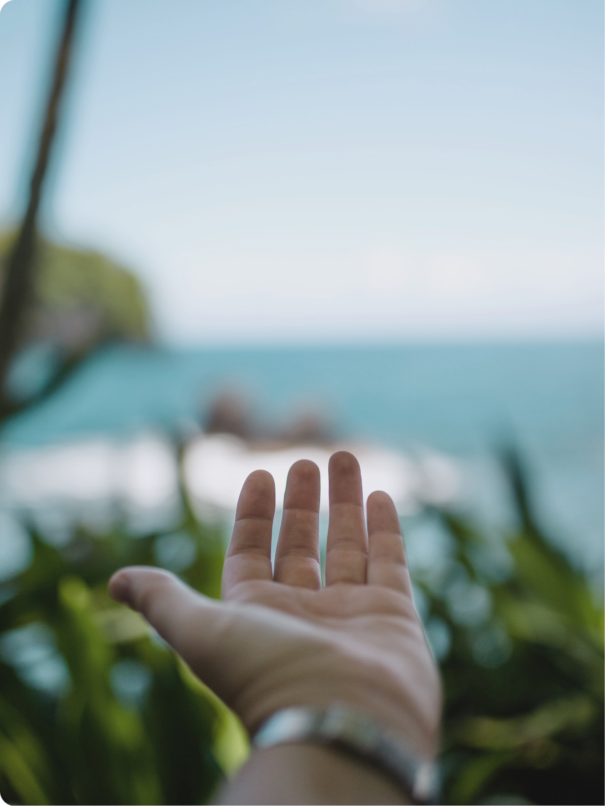

What We Can Do to
Keep Hawai‘i Beautiful
for the Future.
ABOUT MĀLAMA HAWAI‘I

責任ある観光“レスポンシブ
ル・ツーリズム”とは
詳しく見る
観光客もツーリズムを構成する要素であると捉え、観光客が意識や行動に責任を持つことで、より良い観光地形成を行っていこうという考え方です。
WHAT IS "Responsible Tourism"
